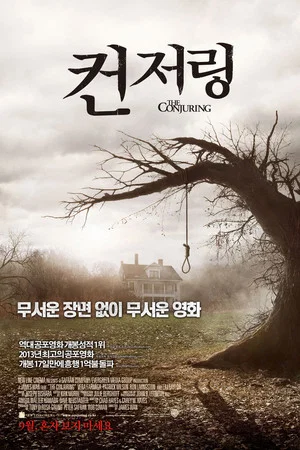

영화 컨저링은 1971년 로드아일랜드에서 발생한 초자연적 실화를 바탕으로 제작되었습니다. 새 집으로 이사 온 페론 가족이 겪게 되는 기이한 현상들과 이를 해결하려는 워렌 부부의 사투를 그립니다.
이 영화는 잔인한 장면 없이도 극강의 공포를 선사하는 것으로 유명하며, 사운드 연출과 압도적인 긴장감을 통해 오컬트 영화의 새로운 장을 열었다는 평가를 받습니다.
영적 능력을 가진 퇴마 전문가 로레인 워렌 역을 맡아 섬세한 심리 묘사를 보여줍니다.
로레인의 남편이자 가톨릭 교회가 인정한 비공식 퇴마사 에드 워렌 역으로 열연했습니다.